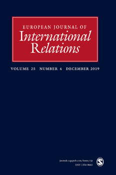

收录于合集

作品简介
【作者】
Thomas Oatley：杜兰大学政治学系教授，研究重点为国家政治经济学与美国霸权
【编译】 李玉婷（国政学人编译员，中国人民大学国际关系学院）
【校对】 王泽尘
【审核】 赵雷
【排版】 赵怡雯
【来源】
Oatley, T. (2019). Toward a political economy of complex interdependence. European Journal of International Relations, 25 (4), 957-978.
期刊介绍
期刊简介

European Journal of International Relations（《欧洲国际关系杂志》），简称“EJIR”，是由欧洲政治研究协会国际关系常设小组（SGIR）经同行评议的季刊，涵盖的范围从前沿的理论辩论到学者们感兴趣的当代和历史主题。它成立于1995年，主编为荷兰阿姆斯特丹大学的Geoffrey Underhill。根据Journal Citation Reports显示，2018年EJIR杂志影响因子为2.756，在91个国际关系类期刊中排名第11（11/91）。
走向复合相互依赖的政治经济学
Toward a political economy of complex interdependence
文章导读
****在复合相互依赖的时代应该如何对全球政治经济进行理论化？历史上国际政治经济学学者将相互依赖定义为由于货物、服务、货币和人员流动造成的国家之间联系（connectivity）的增加以及付出代价的结果（costly consequences）。尽管联系以及付出代价的结果是相互依赖的重要因素之一，但是仅有联系并不能充分体现相互依存的特征。联系是有结构的。当代的全球金融的相互依赖具有很强的等级结构。在全球金融系统中，极少数的国家作为全球金融中心，吸引来自全球交易对手的资金并在它们之间作为中介协调资金流动。大多数其他国家/地区都与该中心相连，但彼此之间只是松散地直接相连。这种等级结构是持久稳定且不断加强的，最终各个层次的异质性（heterogeneity）不断增加。全球金融系统的复合相互依赖的特征表现为一种持续性的联系结构和不断增加的异质性。 复合相互依赖正在重塑金融的政治经济学，国内和国际的分析层次不能被轻易地识别并孤立地研究。现有的国际政治经济学理论主要基于开放政治经济学（以下简称OEP）的逻辑，这一理论忽视了体系层面的研究，也忽视了研究关于变化的问题。我们需要新的理论逻辑。作者认为需要大量借鉴复杂性科学（the complexity sciences）的方法而不是现有的理论隐喻（theoretical metaphors）研究复合相互依赖的全球政治经济学（以下简称PECI）。本文分为四个部分：第一步介绍复杂性理论，重点是其对社会系统的三个关键假设，并将其与OEP方法中的相对应的部分进行对比；第二步突出这些假设对研究全球政治经济学的影响；第三步通过关注次贷危机的发展来说明PECI方法；最后作者考虑PECI的认识论含义并提供结论性意见。
一、复合相互依赖的政治经济学的核心要素 ****
复杂性科学的方法强调对社会系统做出核心假设，其中三个核心命题得到了大多数学者的认可。首先是“更多不同”（more is different）；其次社会系统随着主体、信息和环境的共同发展而发生变化；第三，社会制度是不确定的和不可预测的。从三个核心命题出发，作者首先从三个方面——系统类型、关于理性的假设和系统动力学，对PECI与OEP进行比较，其次作者阐述了PECI的三个实际含义——分析单位、远程原因的重要性和对变化的研究，并将它们与基于OEP的研究进行了对比。
首先，PECI将全球政治经济定义为一个复杂的系统。传统意义上系统理论侧重于国家之间的相互作用以及“黑箱”式国内政治和个人特征。这不是PECI的系统含义，广义上PECI将系统定义为“任何显示秩序和模式的结构”。因此，应该把全球政治经济学作为一个表现出秩序和模式的连贯结构来研究。从更广泛的意义上讲，PECI认为系统是私人和公共代理人（agents）关系的一种模式，涉及国内外相关的机构、规则和组织。
复杂也有特定的含义。PECI方法下，复杂性可以被描述为系统产生令人惊讶事件的能力，即使系统中的消息灵通的观察者也无法预期结果。OEP方法则依赖于简单机械系统的逻辑。比如机械系统可能非常复杂，但是在正常操作模式下，它们不会产生意外。因此，这样的机械系统不是复杂的系统。相反，金融市场表现出相当大的复杂性。
其次，PECI假设人类是有目的的行为体，但是通常无法追求最佳策略。两个因素使得策略难以优化。第一个因素是系统本身的复杂性。其他行动者（agents）可能选择的策略的不确定性会根据交互的复杂性而增加。第二个因素是认知方面的局限性：随着复杂性的提高，行动者越来越难以找到最佳方案并付诸行动。这与OEP关于个人决策的假设有很大不同。首先，OEP很少会质疑发生交互的结构，将其视为（或仅假设是）客观现实。其次，选择的所有可能结果都是已知的，因此可以为每个结果分配概率。最后，在前两个假设的基础上，行为体可以正确地了解自己的环境并适当地更新自己的信念，前提是他们可以得到信息。
第三个方面与复杂性科学相关，它假定全球政治经济学是非遍历（non- ergodic）的：随着时间的推移，它会发生变化。非遍历性的假设是新制度主义的核心。由于共同构成系统的主体之间的适应性互动，全球政治经济中的成果分配会随着时间而变化。相反，OEP继承了新古典经济学的遍历性假设。
** 二** 、 核心假设的含义
PECI对如何将（金融的）复合相互依赖理论化具有影响，作者重点介绍三个最重要的含义。
首先， 系统是PECI的分析单位 。PECI鼓励研究全球政治经济的组织方式，该组织如何影响系统行为和绩效以及系统随着时间的变化。PECI鼓励探索一个国家在系统中的地位是否以及如何限制外国冲击的局部影响，并导致其他方面相同的冲击产生不同的全球影响。最后，研究系统意味着对系统的结构和性能随时间变化的方式和原因进行理论化。在过去的20年中，OEP在国际体系层面的研究相对较少，更加关注国内政策选择的决定因素以及个人经济政策偏好的起源。个人而不是系统是其分析单位。此外，即使当国家而不是个人成为分析的单位时，学者们也通常将国家与国际体系区分开来。
其次，因为系统是分析的单位，所以PECI认为引起局部结果最大利益的 原因往往是全球性的 。例如，系统性金融危机的本地表现可能是世界其他地区发生的事件造成的。相反，OEP支持“所有事物都与其他事物相关，但近处的事物比远处的事物更相关”。首先，绝大多数OEP理论阐述了在同一分析层次上的因果关系。第二，OEP通过在同一问题区域内搜索特定结果的原因来进一步定位因果关系。
第三，PECI提倡对 系统的变化 进行理论化的研究。抽象地说，PECI主要对随着全球政治经济的发展而变化的系统结构和行为的理论化感兴趣。更广泛地说，作者认为需要内生于系统变化的理论，这一理论通过检查行为者如何使其行为适应先前做出的决策（然后是制度化）的（通常是无法预料的）后果，以及这些适应如何随着时间的推移持续或以大离散的方式（inlarge discrete jumps）推动系统的变化。PECI对系统变化的关注与OEP研究大相径庭。OEP认为系统是遍历系统，并不探究内生于系统变化的理论。其研究目的是确定跨越时间和空间的因果关系。OEP对全球经济中发生的变化不是视而不见的的，但是该框架假定系统特征的重大变化是由社会和政府对外来冲击的反应所引起的。
三、PECI与次贷危机 ****
作者认为需要更多地通过PECI而不是OEP来研究全球金融的相互依赖性。 对此，作者追溯了金融创新和金融监管的发展，研究2008-2009年的次贷危机，说明该过程如何将风险集中在系统的中心。
次贷危机是一个关于由抵押支持证券（MBS）构成的担保债务凭证（CDO）的出现、发展和崩溃的故事。这一轨迹是由一系列改变金融体系的共同进化过程以及市场参与者和监管机构无力获取有关这些变化的性质和程度的信息导致的。CDO是一种工具，允许机构通过汇总和转移来管理风险。资产池里每一种资产都单独承担相对较高的信用风险，但不太可能同时发生高违约率。
由次级抵押贷款构建的CDO在2000年之前不存在，由于金融创新和金融监管的共同发展，它们在危机中发挥了核心作用。传统上，抵押贷款（或其他资产）的发起人在其资产负债表上承担信用风险直至到期。1990年之后，金融机构开发了模型和工具，使它们可以将这种风险从资产负债表中转移出来，然后将其分割并出售给愿意持有的投资者。CDO和用于构建它们的基础模型是在这种风险革命的背景下发展起来的，并已成为其重要组成部分。
简而言之，CDO作为一种特定的创新产生了更广泛的革命性影响，并通过私人金融风险管理模型和监管制度的共同发展而得到加强的积极反馈，从而在整个金融体系中得以传播。这场风险革命改变了（抵押）金融系统的可能性空间。2003年之前不可能发生的事件突然变得可能。此外，由于金融转型改变了可能性空间，因此改变了与该空间相关的概率分布。一些事件变得更有可能，而其他事件则变得不太可能。
但是，该系统并没有分散风险，而是将风险集中在系统中某些最大、最集中的机构中。风险变得更加集中，因为随着参与者利用系统过去的信息，他们改变了系统的行为方式。作者称之为信息熵循环。随着时间的流逝，对系统观察的积累使参与者能够预测发生或多或少发生的事件。行为体随后利用这些信息来实现特定目标。 **然而，当他们利用信息时，他们可能会改变系统内的行为，从而重塑概率分布。 结果，从过去得出的有关系统属性的信息不再是当前的可靠指南。**但是，不幸的是，信息熵循环通常在不确定的世界中运作，在这种世界中，参与者无法知道熵正在上升，因为他们无法直接观察变化的分布。相反，当系统以意外事件的形式产生新信息时，参与者会意识到变化。
市场参与者、监管员和监管机构认为，有关美国不同地区房屋价格之间的相关性的历史信息可以很好地估算出MBS与CDO的当前的违约依赖性。从历史上看，各个州的房价并没有高度相关。
直到20世纪90年代初，美国的抵押金融体系都是分散的，典型的抵押贷款机构将其活动集中在单个州或地区内。这意味着抵押贷款的周期和这种周期产生的住房价格变动更多地受到每个州内独特发展的影响，而较少受到共同的国家发展的驱动。因此，住宅房地产价格的跨区域和跨州相关性非常低。1994年之后，这种监管环境发生了变化，监管机构鼓励全国范围内的银行业发展，允许和鼓励银行分散资产负债表。抵押贷款变得更加集中，少数大型银行在更广阔的地理区域内提供贷款。随着抵押贷款的集中度越来越高，各州的抵押贷款同步化程度越来越高，从而导致房屋价格的相关性远高于历史水平。违约依赖性因此显著增加。简而言之，利用系统历史信息的广泛努力改变了系统。
因此，基于PECI对次贷危机的研究关注随着时间的推移而改变金融系统的机制，以及这种改变对系统性能的影响。它强调了金融体系内部创新、积极反馈、扩散和绩效的影响，以及金融创新和金融监管的共同发展。通过探索这些过程如何改变金融系统的可能性空间和相关的概率分布，它强调了金融系统的非遍历性。它鼓励我们认识到，随着参与者改变系统，他们常常无意间破坏了信息，因此在信息熵不断增加的环境中工作，在这种环境中，他们对系统工作原理的理解越来越不准确。通常，这种循环在不确定性世界中展开，在这种世界中，参与者无法知道他们已经改变了系统。最后，随着时间的流逝，这种信息熵周期的运行会导致系统性能很大的不连续性。
四、结论：复杂系统的认识论 ****
作者呼吁将全球政治经济学视为一个复杂的系统。 系统以各种形式出现，其中一些是不确定的和不可预测的，这对国际政治经济学的研究方式产生了三个明显的影响。第一个影响涉及如何产生有关全球政治经济学的知识。该领域必须变得更能接受“拥抱整体论”的认识论。拥抱整体论意味着将全球政治经济学作为一个系统来研究。第二，因为全球政治经济是一个复杂的适应性系统，时间在其中很重要，所以国际政治经济学应更多地借鉴历史科学而不是实验科学。最后，这意味着学者需要认识到作为学者产生的关于人类社会系统的知识的保存期限是有限的。这种承认可能但不一定会对我们产生知识的方式产生影响，但会对我们如何使用知识产生影响。换句话说，社会科学研究本身不能免于信息熵循环的影响。
** _ _ _ 本文由国政学人独家编译推荐，文章观点不代表本平台观点，转载请联系授权。___**